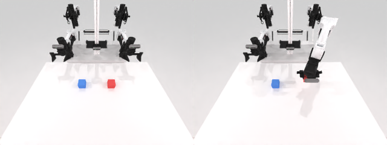
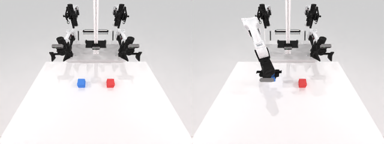
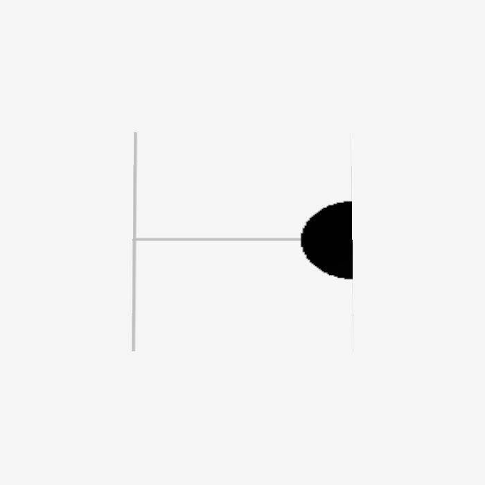
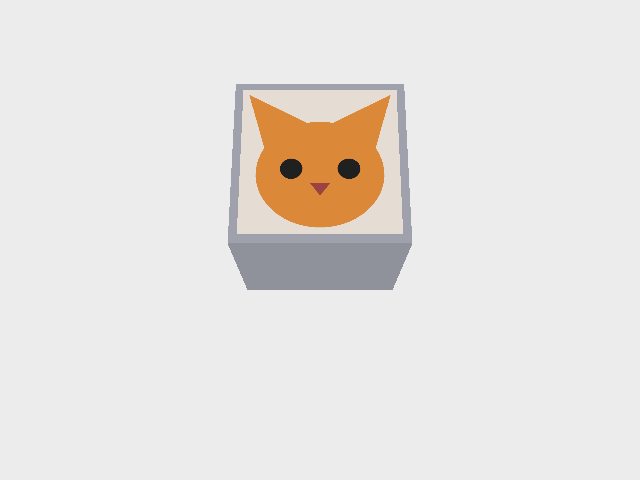
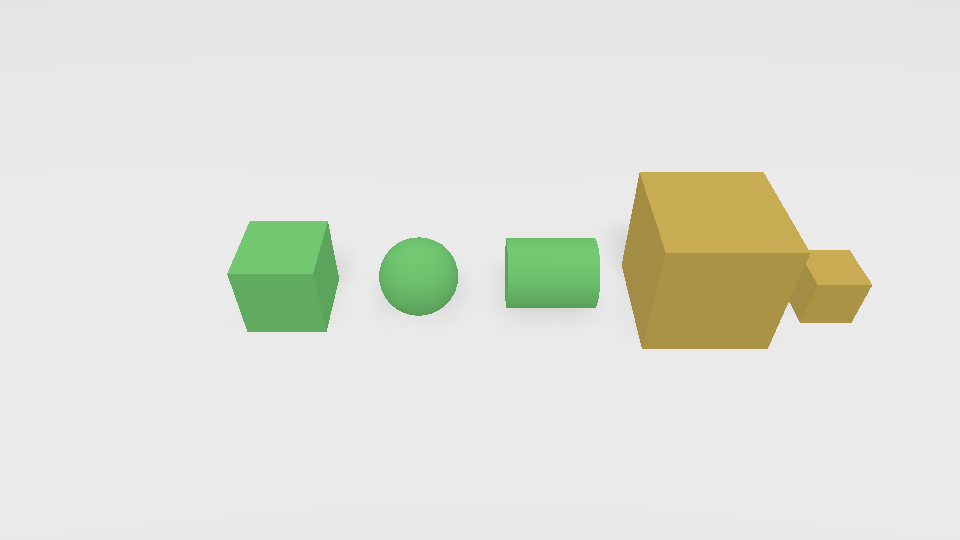

TL;DR
做了什么
一个 env 装下 4 个特征轴（color/decal/shape/size），全用 primitive 生成，指令用单 {ADJ} 槽点名目标物体。
怎么验证的
oracle spike N=20/轴：正例（抓命令的目标）+ Layer-B（抓干扰物必拒）；Layer A 指令路由 + Layer B/同场景结构测试；采出 head 相机 demo 视频。
结论
任务搭好并oracle 层面全绿：4 轴各 20/20 正例、0/20 反例、value 平衡 10-10。可进采集/eval。
最大的坑
初版目标物体位置固定 → policy 抓固定位置就 100%、不用读指令，IF 诊断被击穿。改成 pair 内同场景、只翻命名目标。
背景与目标
RoboTwin-IF 的论文任务把多个能力耦合在一起，难定位 policy 到底在哪个轴退化。IF-Ext 做单维度拆分——每个任务只主测一个能力轴。本任务测「形容词/视觉特征」：物体其余特征全固定，只有一种是区分量，指令按它点名，看 policy 能否 ground 对。
原设计是「优先级阶梯」（color>texture>shape>size 累积干扰物），可信度最低、风险最高。本轮把它整个翻新成 primitive 版四特征 mode，经四个决策转折收敛（见关键决策）。诊断的核心失败模式：policy 不读指令、靠先验/捷径选物体。
实现 / 架构
单个 attribute_select(Base_Task)，seed 决定一切，四件事同源（RoboTwin IF 接线的核心）：
value=seed%2 · scene=seed//2
同场景、只翻命名目标
指令渲染 {ADJ}
- 4 轴同一 env：color 红/蓝盒 · decal 顶面猫/狗贴图 · shape 方块/细长条 · size 大/小盒。全
create_box（自包含，无外部资产、无物体池依赖）。 - 指令：单
{ADJ}槽承载完整指代短语（"red block" / "block with a cat on it" / "long bar" / "big block"），模板只 "Pick up the {ADJ}."——4 轴占位符集合统一、框架标准路由直接通。 - decal 走纯内存刚体：
RenderTexture2D(数组)+RenderShapeTriangleMesh(顶点+UV)焊到 cube 顶面，零磁盘文件（抗嵌套，见 howto-decal-on-cube.md）。 - 成功判定：state-based——抬离桌面的那个物体是不是命令的目标（
_raw_success）；抓干扰物即使抬起也判失败（Layer-B）。 - Pair-gate（对齐 laptop_verb/stack_sequence）：
check_success在 raw 成功之上再要求「同 scene 的另一个值也 oracle 可行」——用 throwaway buddy 试跑 partner 种子、按 scene_seed 缓存。任一半失败 → 两局都判 False → native collect_data 只产出完整对，oracle 不可行/半采的 scene 不进采集与 eval（同一套定义，避免 orphan）。
证据
oracle 每轴都抓对命令的目标（head/wrist 近距相机，decal 的猫/狗看得清）。每对 (ep偶, ep奇) = 同场景、只换指令目标。
(ep偶, ep奇) 同场景、只翻指令目标。同场景对比 —— 这就是 IF 的关键（也是那个 bug 的修复证据）


(2k,2k+1) 初始帧像素级相同，只有抓走的物体随指令变 → 位置不泄露答案，policy 只能靠读指令。结构测试 test_check_success.py 断言两局物体位姿集合相同、命名目标翻到另一位置（5/5 通过）。场景多样性（位置 + yaw 抖动，pair 内仍不变）

scene_seed 抖动（不同场景各异），但同一对内两局仍完全一致 → 既有多样性、又保同场景对比。decal 深挖：从踩坑到纯内存配方

create_box(texture_id) 的 box 面 UV 不是 [0,1]，只采样偏心半窗（标定图四角/边框全丢、中心点被推到边缘）→ 单张头像被裁。

关键决策 / 教训
四个设计转折
| 从 | 到 | 为什么 |
|---|---|---|
| 优先级累积阶梯 | 按属性型分独立 mode | 累积升档同时动「属性种类+个数」，失败分不清哪层挂；分 mode 隔离掉 count 混淆，退化照样从 per-mode 成功率读得出，更干净。 |
| 多物体抓取池 | primitive(create_box) | 一刀消掉三大风险（池盘点 / 属性标注 noisy / per-object 抓取参数）+ 脱离断链的池 infra → 任务自包含。代价：更合成，是「干净下界」。 |
| 抽象 texture | decal 贴图(猫/狗) | 材质纹理最大风险是「同色不同材质相机分不清」；换成猫/狗贴图后视觉可分免费+强先验。诚实标注：decal 是表面图像语义，不是材质、不是形容词。 |
| size 预留 | 正式第四 mode | effort 极低（缩放同 cube），四档正好收齐 color>texture>shape>size 全类。 |
load_actors 把目标物体放在一个 value-无关的固定 slot → 目标永远在同一位置，policy「抓固定位置那个」就能 100% 正确、根本不用读指令或看属性，IF 诊断被完全击穿（假阳性上天花板）。修复：
scene_seed 固定的应是特征值→slot 的映射（pair 内像素级同场景），只让 value 决定命名哪个当目标。可推广的教训：单轴隔离不只是「只变一个属性」——还要求除被命名的目标外，一切（含物体摆位）在对比对内不变，否则 policy 走位置/几何捷径拿假阳性。已加 Layer 同场景结构断言防守，并存进项目 memory 供其它 IF 任务复用。
两个实现坑
- decal 不能事后 attach：
create_box已把 entity 加进场景，再 attach mesh 报adding shape to render body that is already part of an entity is not implemented→ 改成手工建刚体（build 前 attach decal mesh），并手配默认 box top-down 抓取点让grasp_actor照常工作。 - 细长 bar 抓不起：bar 长轴超夹爪开度。做成明显细长（长 0.12）后，锁定「夹短轴」的接触点子集
BAR_GRASP_IDS=[1,3]（等效转 90° 夹窄边）→ shape 轴回到 100%。
现状与边界
| 项 | 状态 | 证据 / 说明 |
|---|---|---|
| 4 轴 oracle 正例 | ✓ 20/20（固定版） | wiring spike N=20，val0/val1 各 10/10 平衡 |
| Layer-B 反例（抓干扰物） | ✓ 0/20 全拒 | 同 spike + test_check_success.py |
| 指令路由 Layer A | ✓ 8/8 | test_instruction_routing.py（RoboTwin 原生 filter/replace） |
| 同场景结构 + check 谓词 | ✓ 5/5 | test_check_success.py |
| 位置+yaw 抖动（多样性） | ✓ 抖动版 N=20 已验 | color/decal/size 100%、shape 95%（bar 某 yaw 偶失 1/10，过 90% 闸）；结构测试 5/5 仍过（pair 同场景保持） |
| demo 视频 | ✓ 4轴×2值 | 抖动前采集；抖动版待重采 |
| 接入 all_tasks_plus_if.yml | 未做 | 该合并清单本仓尚不存在（同 laptop/stack） |
| policy eval | 未做 | 只 zeroshot/native-ft 协议，方向性/分 mode 指标（见母文档） |
- 证明的是 oracle + 任务机制正确（脚本能按指令抓对物体、反例被拒、同场景成立），不是某个 VLA policy 在这任务上表现好——policy eval 还没跑。
- 猫/狗贴图是程序画的占位图标，非真实照片；真实图后续按同一内存路径替换（授权待办）。
- N=20 是 oracle 可行性规模，不是统计意义上的大样本。加位置+yaw 抖动后 shape 轴的 bar 有 ~5% 边缘失手（某些朝向下夹取偏难），仍在 90% 闸之上但非满分。
- size 是四轴里视觉可分性最弱的（连续量、依赖相机），shape 的「形状词≈名词」与纯名词任务有轻微语义贴边——都已在设计里诚实标注。
怎么复现
# 1. 把 env/指令池 symlink 进 submodule
./bridge_tasks.sh
# 2. oracle 接线诊断（4 轴 × 正例/Layer-B，含 val 平衡）
conda run -n RoboTwin python tests/attribute_select/spike_wiring.py 20
# 3. Layer A 指令路由（无需 sim）
conda run -n RoboTwin python tests/attribute_select/test_instruction_routing.py
# 4. Layer B + 同场景结构
conda run -n RoboTwin python tests/attribute_select/test_check_success.py
# 5. 采集 demo（出 head/wrist mp4 到 data/.../video/）
conda run -n RoboTwin python script/collect_data.py attribute_select attribute_select
# 6. 看初始场景多样性
conda run -n RoboTwin python tests/attribute_select/render_init.py 8 9 10 11 12 13 14 15深读：设计决策链与踩坑全过程见 design-discussion.md（§1–8）；给 cube 贴图的通用技法（UV 坑 + 纯内存配方 + 最小可跑例）见 howto-decal-on-cube.md。母设计 IF-Ext §3。
tasks/envs/attribute_select.py + tasks/task_instruction/attribute_select.json + tests/attribute_select/